December 2013 Redesign for Latina.com, the number one lifestyle, entertainment, beauty and fashion site for Latinas.
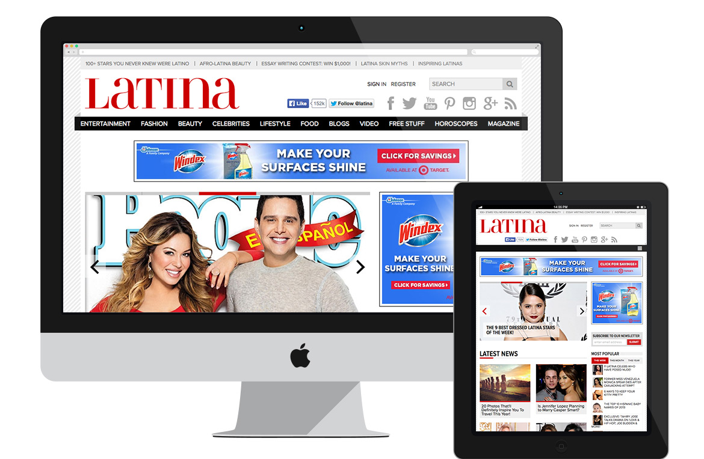Logo Design for Baja Meets NYC, a unique food and wine festival celebrating the bounty of Valle de Guadalupe in Mexico’s Baja Peninsula and featuring an impressive cast of participating Baja chefs and winemakers.
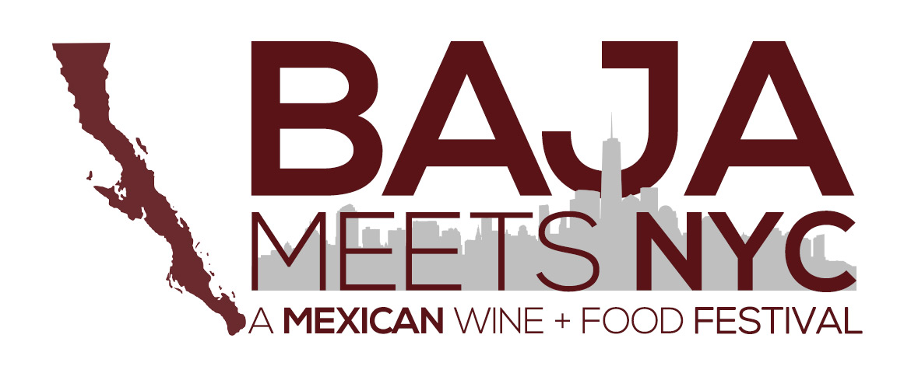Design + Front-End Dev for Baja Meets NYC.
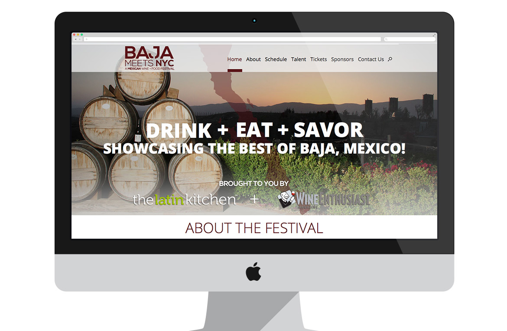App Design + Front-End Dev for Latina Extra, exclusive access to content, photos, videos and more you won't see in the magazine or online.
I created a few soundboards for the editorial team over at latina.com using photoshop, html/css and jquery.
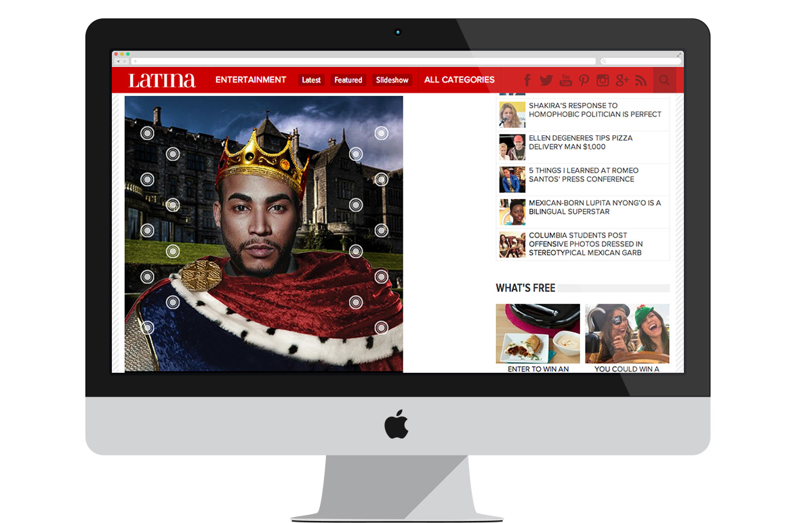In my spare time I sometimes like to kick back relax and play around with type.
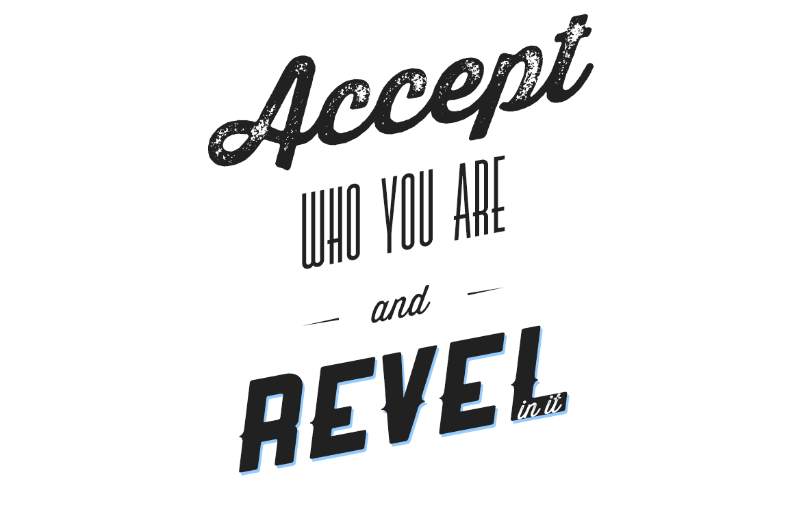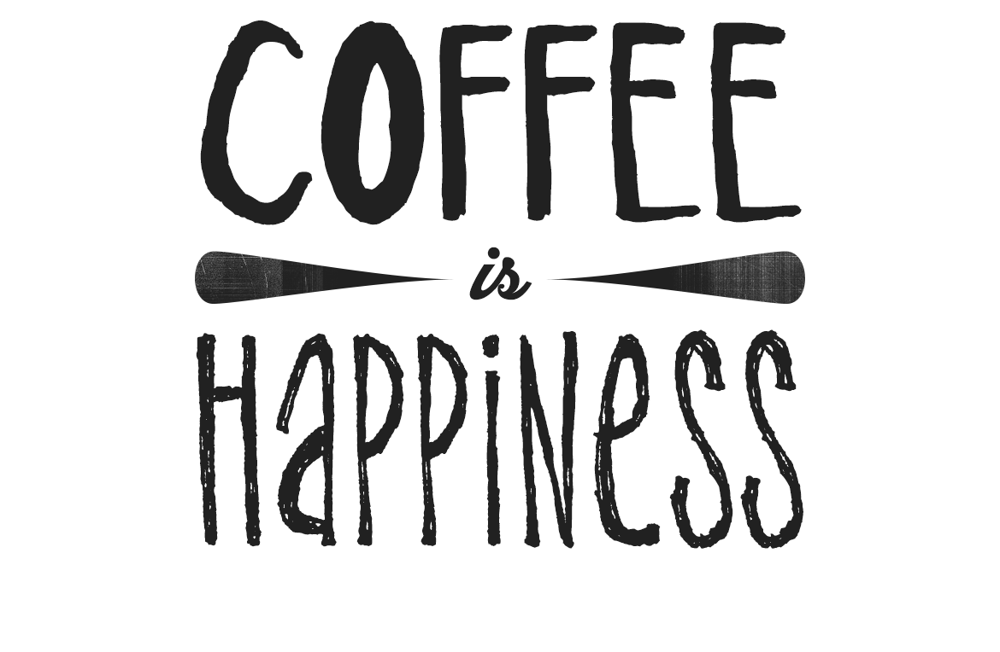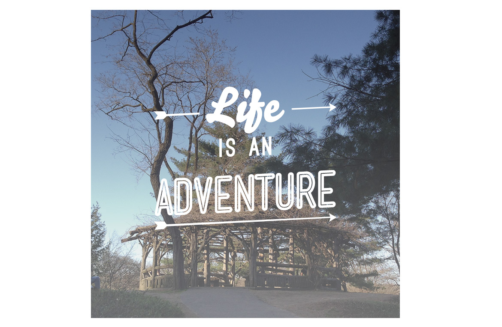Web Design + Front-End Dev on Nationbuilder for Julio Pabon, City Council Candidate 2013.
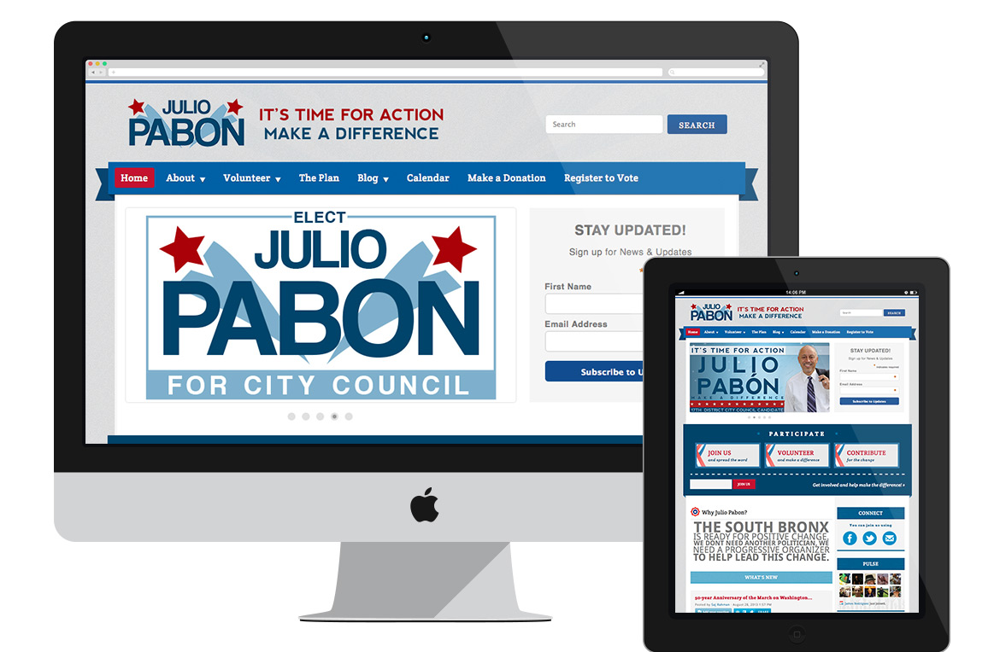Digital email blasts and Instagram contest images designed for Latina Media Ventures.
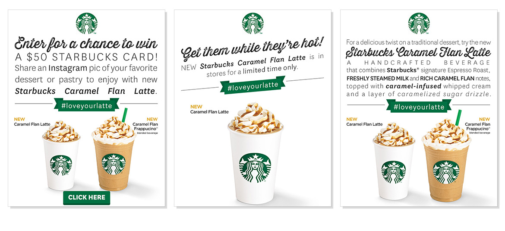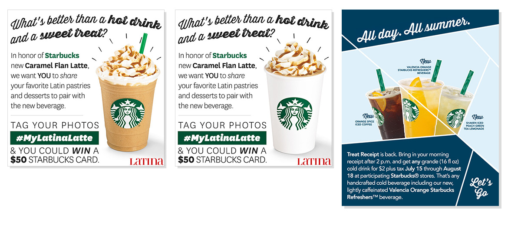Logo + Web Design + Front-End Dev for Online Mom Media which specializes in building powerful communities of influencers to establish and leverage lasting relationships between brands and consumers.
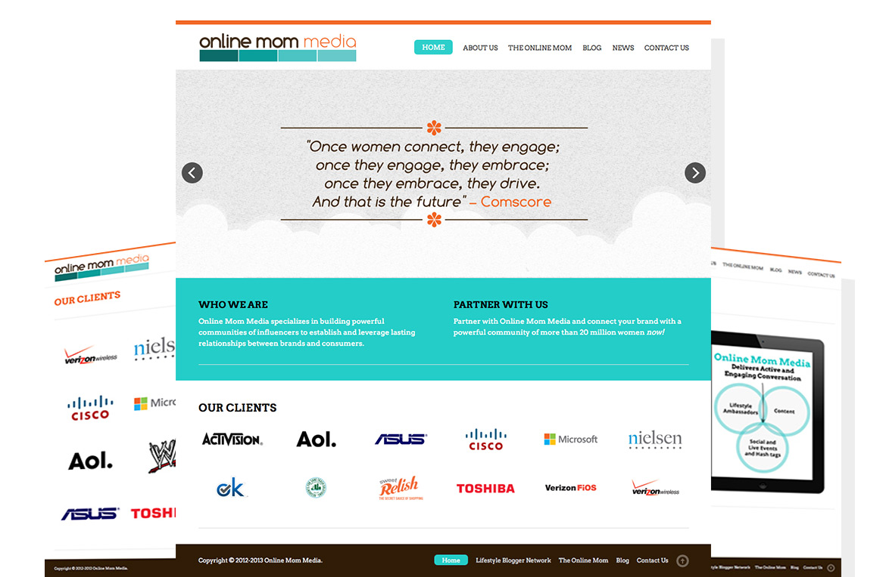Digital animated ads, email blast and calendar designed for Latina Media Ventures.
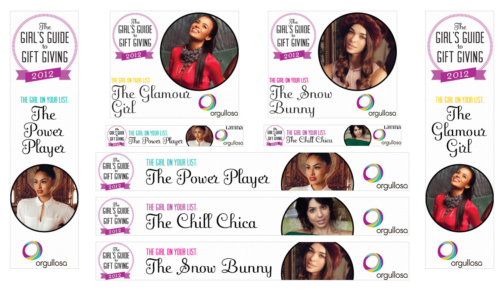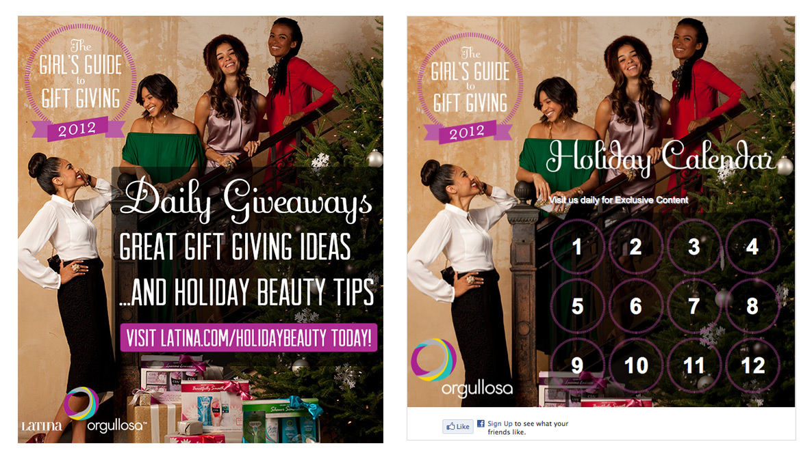Branding + Web Design + Development for Caregiving Society, a website where anyone can share experiential insight, connects and ideas about medical topics or issues that occur around the world.
Logo and Business Card Design for Cloudruple, a cloud computing company.
2013 Site redesign for Latino Sports Ventures, and mockups of LSV Business Cards.
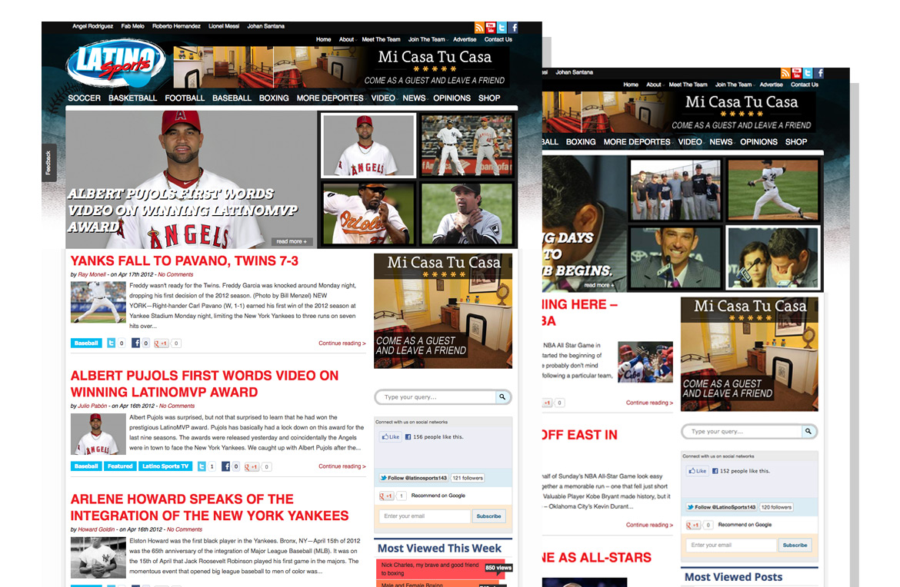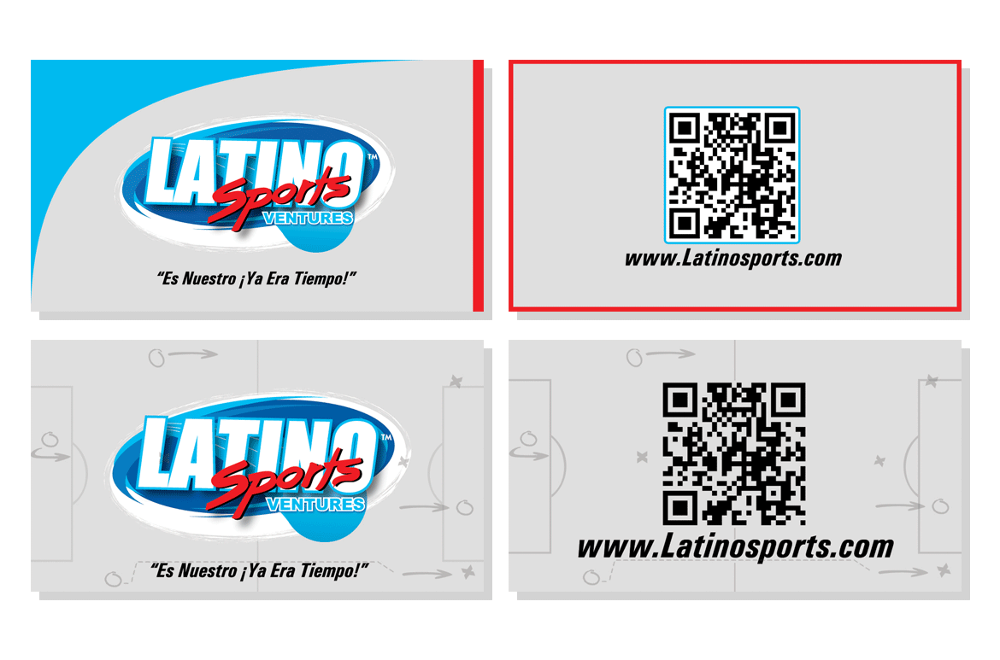Digital email blast designed and pinterest contest designed/developed for Latina Media Ventures.
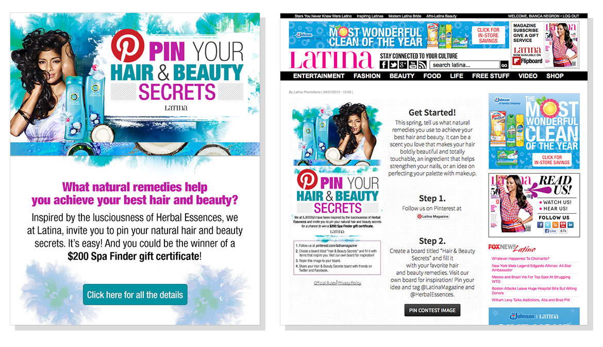Logo + Business Card Design for Superior, a H.V.A.C. company.
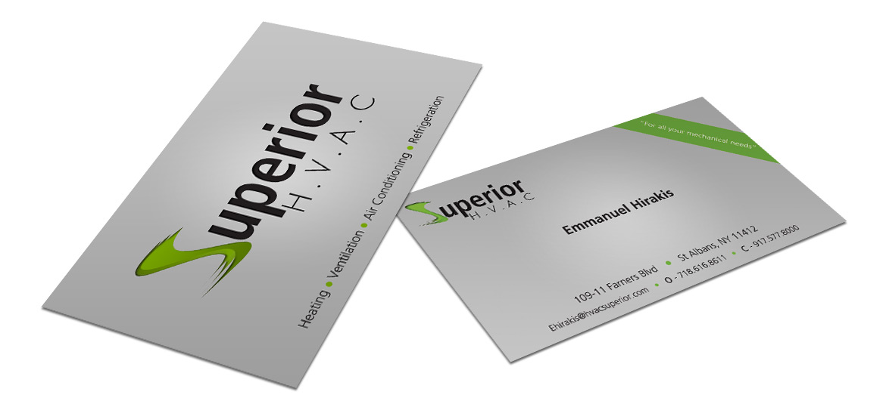Logo Design for Pmtix.com, a website helping people find and attend events that feed their interests.
I'm working full-time on Latina.com, the number one lifestyle, entertainment, beauty and fashion site for Latinas, so I'm not accepting freelance requests. If you're passionate about any upcoming projects, I'm always happy to talk about ways to collaborate. Feel free contact me with any questions, comments or just to say hey.